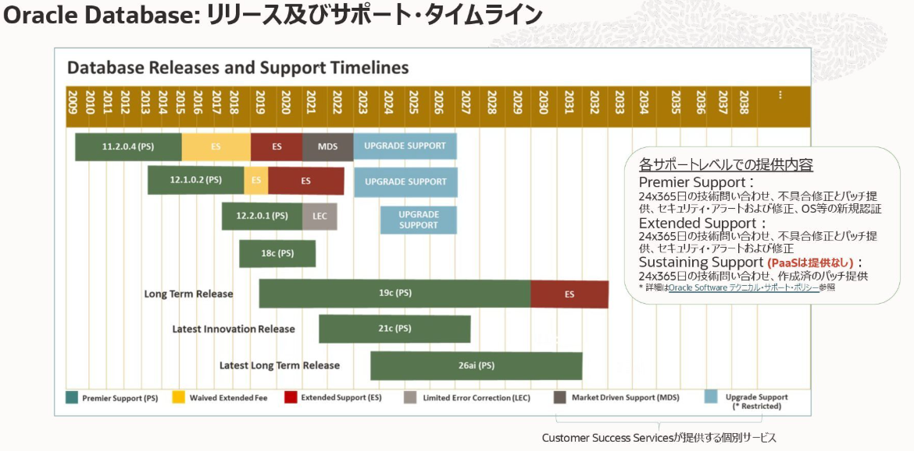
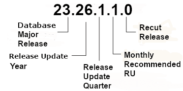

トップページ
作成日：2026/05/30 14:55:29
更新日：2026/10/03 09:36:52

2026年9月時点で、“Long Term Release”(Long Term Support Release)として位置づけられているのは、26aiと19cだけとなります。

「Oracle 26ai（Oracle AI Database）」は、従来の「Oracle Database
23ai」に代わる次世代の長期サポートリリース（LTS）です。
AIをデータのある場所で直接処理する「AI-Native」思想を特徴とし、SQLによる高度なベクトル検索などを備えています。
| バージョン | 提供時期 | 製品名 | 主なトピック・特徴 |
|---|---|---|---|
| 23.8.0.25.04 | 2025年04月 | April 2025: Oracle Database 23ai | Oracle Database 23ai としての四半期RU |
| 23.9.0.25.07 | 2025年07月 | July 2025: Oracle Database 23ai | Oracle Database 23ai としての四半期RU |
| 23.26.0.0.0 | 2025年10月 | October 2025: Oracle AI Database 26ai | Oracle AI Database 26ai へリネーム・統合（命名規則変更） |
| 23.26.1.0.0 | 2026年01月 | January 2026: Oracle AI Database 26ai | 26ai 最初の四半期RU（Linux x86-64オンプレ版GA） |
| 23.26.2.0.0 | 2026年04月 | April 2026: Oracle AI Database 26ai | 定期四半期RU |
| 23.26.3.0.0 | 2026年07月 | July 2026: Oracle AI Database 26ai | 定期四半期RU |
| バージョン | 提供時期 | 主なトピック・特徴 |
|---|---|---|
| 19.3.0 | 2019年02月 | 初期リリース。 各種OSのベースインストーラーとして広く提供されているバージョン。 |
| 19.6.0 | 2020年01月 | 新OSサポートの基準。 Red Hat Enterprise Linux 8 (RHEL8) や Oracle Linux 8 などの環境に19cを導入する際、この 19.6 以降のRUを同時適用（Imageインストール）することが必須となりました。 |
| 19.11.0 | 2021年04月 | 待機系データベース（Active Data Guard）の参照パフォーマンス向上や、ブロック・チェンジ・トラッキングの安定性向上が図られた実用性の高いパッチ。 |
| 19.18.0 | 2023年01月 | DST（夏時間）パッチの同梱化: 使用可能なすべてのDSTパッチがRU内に同梱されるようになり、タイムゾーン調整の手間が大幅に削減されました。 |
| 19.20.0 | 2023年07月 | パフォーマンス・プロファイルや診断機能（AWRなど）のマイナーな動作改善やバグ修正が多く含まれ、長期運用の安定版として多くの企業で採用。 |
| 19.23.0 | 2024年04月 | メモリリーク関連の修正や、オプティマイザのカーディナリティ誤認（リグレッション）に対する重要な修正が複数含まれる安定化パッチ。 |
| 19.29.0 | 2025年10月 | 非常に多くの本番環境（OLTP）のワークロード向けに、SecureFile LOBの破損防止対策や、RAC環境のキャッシュ・フュージョン時のバースト混雑緩和など、実践的なクリティカル修正が配信されました。 |
| 19.30.0 | 2026年01月 | リリース直後にRAC（Real Application Clusters）環境特有の重大な不具合が発覚し、一時Oracle社により取り下げ（Withdrawal）の措置が取られるなど、DBAの間で話題となったバージョンです。 |
| 19.32.0 | 2026年07月 | 直近の最新RU（2026年7月度）。 AI時代を背景とした迅速な脆弱性対策が呼びかけられており、最新のセキュリティ修正とオプティマイザの挙動修正が提供されています。 |
opatchは、「p6880880_
opatchは、Oracleパッチ番号が「p6880880」で固定となります。
以下手順でダウンロードを行います。